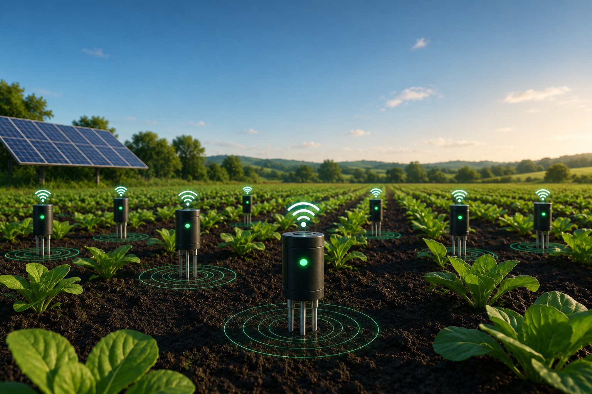
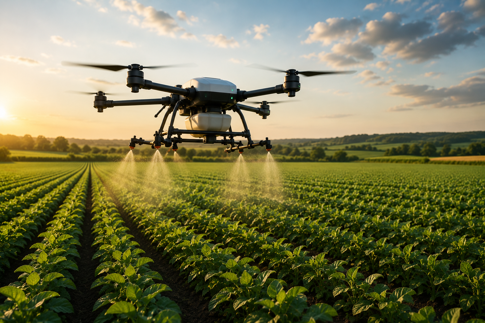
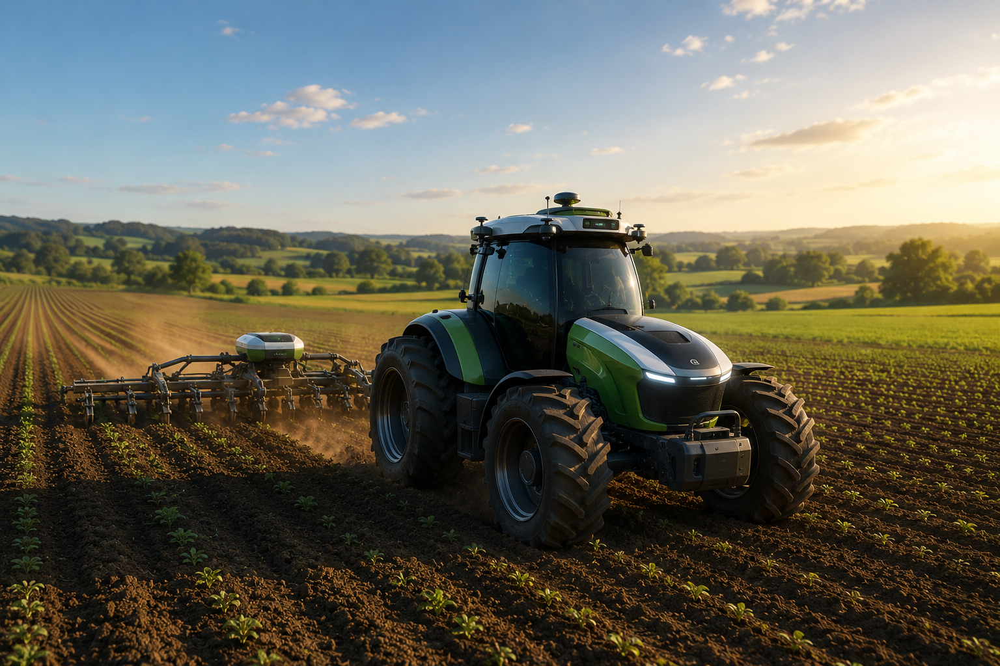
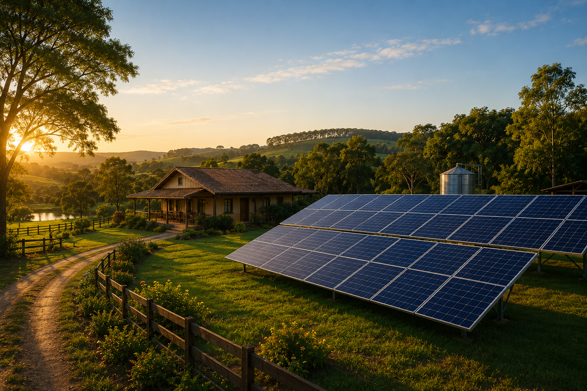
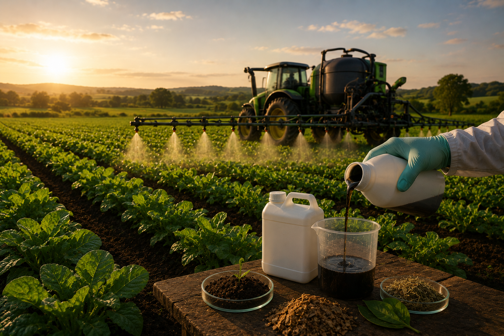
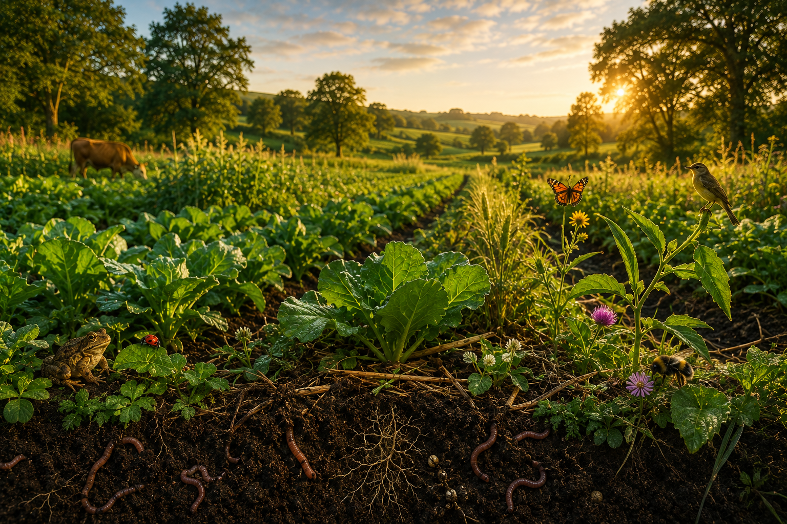

Produzir Alimentos
Garantir alimentos para uma população crescente.
Descubra como a tecnologia, a sustentabilidade e a inovação estão transformando o campo e garantindo alimentos para o mundo.
Você será responsável por uma fazenda do futuro. Tome decisões inteligentes para produzir alimentos preservando o meio ambiente.
Garantir alimentos para uma população crescente.
Usar recursos naturais de forma responsável.
Diminuir impactos ambientais.
Garantir sustentabilidade econômica.
Conheça as transformações que mudaram o campo.
Trabalho manual e baixa mecanização.
Chegada das máquinas agrícolas.
GPS e monitoramento do campo.
IA, sensores e automação.
Produção e recuperação ambiental.
Ajuste os recursos da fazenda e acompanhe os resultados.
Observe os impactos das suas decisões.
| Indicador | Tradicional | 4.0 |
|---|---|---|
| Consumo de Água | Alto | Baixo |
| Carbono | Alto | Reduzido |
| Precisão | Média | Alta |
| Produtividade | Média | Elevada |
Conheça tecnologias que estão revolucionando o campo.

Monitoram umidade, nutrientes e condições do solo em tempo real.

Detectam pragas, doenças e falhas de plantio rapidamente.

Executam operações com alta precisão e menor consumo de combustível.

Reduz custos e diminui a dependência de fontes poluentes.

Alternativas biológicas que reduzem o uso de produtos químicos.

Produz alimentos enquanto recupera os recursos naturais.
Clique em uma região para descobrir exemplos de inovação agrícola.
Selecione uma região para conhecer exemplos de agricultura sustentável.
Teste seus conhecimentos sobre Agricultura 4.0.
Suas ações no site geram recompensas educativas.
Responder a primeira pergunta corretamente.
Equilibrar os indicadores do simulador.
Concluir o quiz com excelente desempenho.
Finalizar toda a jornada de aprendizagem.
Sua missão é alcançar:
Ao concluir sua jornada você poderá gerar um certificado personalizado.
A agricultura sustentável depende da união entre conhecimento, tecnologia e responsabilidade ambiental. Cada escolha feita hoje ajudará a construir um planeta mais equilibrado para as próximas gerações.
Reiniciar Jornada